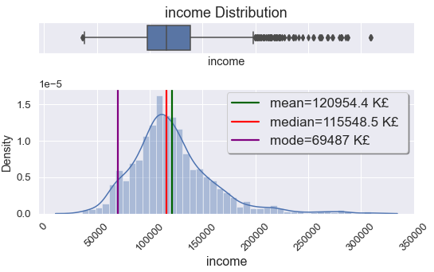

Customer Segmentation Using K-Means Clustering
K-means clustering is a method for finding clusters and cluster centres in a set of unlabelled data. It is important to segment, in our case customers, to help the marketing team to launch a new product and use different advertising methods for different type of customers.
- Data understanding and data features
- Cleaning and initial explarotary analisys of the data
- Segmentation using K-Means Clustering
introduction
Although we understand the importance of the data, it is crucial to properly manage data. It is a first step in effectively analysing data which leads to important insights. The volume and speed data is generated has grown beyond human comprehension in last decades. Data can contain a variety of useful information and studying it collectively can uncover very minor patterns and details.
Things get done only if the data we gather can inform and inspire those in a position to make a difference." - Dr. Mike Schmoker.
With the advancement of a big data, there has been a shift from experience-based decision-making to a data-driven decision making in upper management in businesses. Although data-driven decision is powerful tool, but does not undermine the experience and expertise of the leaders. Insights derived from data can help managers to approach decision-making process on more reliable and concrete ground. Data analytics can aid businesses in improving operations in different levels by assessing metrics for effectiveness and process outcomes. It also helps to identify financially unviable processes replacing it with more enhanced streamlines. Data analytics enable businesses to constantly monitor market trends to improve customer service or launch a new product that can be positively received by customers. For example, retailers can analyse customer purchasing process to better understand the demand and their customer's buying habits. Even more, businesses can quickly determine advertisements for their target demographic, which is the main subject of this project.
Data understanding
Effective data analysis requires an understanding of the problem we are trying to solve. We need to know the questions we are hoping the get answer. The next step is to identify what information or what variables we need in order to answer those questions. In our case it is customer information with variables as below:
- customer_id - unique identification of a customer
- gender - gender of a customer - 0:Male - 1:Female
- marital_status - marital status of a customer - 0:Single - 1:Non-single
- age - age of a customer
- education - education level of a customer - 0:Unknown/other - 1:High-school - 2:University - 3:Graduate level
- income - reported annual income of a customer
- occupation - occupation of a customer - 0:Unemployed/Unskilled workers - 1:Skilled employees - 2:Highly qualified/Management positions
- settlement_size - size of a city the customer lives in - 0:Small city - 1:Mid-size city - 2:Big city
Exploratory analysis
Next important step of data analysis process is Exploratory data analysis (EDA). EDA is used to look at the data and think about the data from many points of view. In order to better understand the pairwise relationship between variables we are using pair plot. This creates a visualization summarizing a important part (in our opinion) of our data in single figure.
To better understand the important correlation coefficients we are using correlation matrix. From the heatmap below we see the positive correlation between "age" and "education". Or in other words older people tend to be more educated in our sample. From matrix we can see married people are more educated. And settlement size gets bigger by better job or occupation.
One of the features in our data is "age". "Age is an important determinant of expenditure shares for every budget category. Expenditure shares increase with age for food at home, and to some extent, housing and health, but decrease with age for food away from home, apparel, transportation, and other purchases." To evaluate our customer's demographic we are plotting distribution plot of age. The average age of the customers is 35.9, the median is 33.0 and mode is 26 years old. Or people aged 26 is more frequent in dataset. According to statista.com most active and largest group of social media users in UK are people aged 18-34. It is 54% of our customers. Number of people in age group 34-64 is 865 with 43% of customers. From the box plot there are 57 customers aged 65 and above which are considered natural outliers. And we will not treat them as we would with artificial ones.

Gender plays a huge role in understanding people's purchasing habits. Gasiorowska reported the differences between male and female buying behaviours. According to the study "the male customers' buying behaviour is instrumental in nature and prefer minimal level of engagement and finish the purchasing process fast". On the other hand "females exhibit more impulsive buying behaviour than men, enjoy shopping more than men, and decide to buy products by evaluating various products in different stores rather than buying products from a single store". Keeping it in mind it is paramount to analyse distribution of age by gender of the customers. 1086 of customers are male out of 2000 with 54.3% of the total population. With average age of 38. Female customer's average age is slightly younger than the males with average 34 years old.

Data distribution in "income" feature reveals that average income of the customers £120954. Most of the customers has annual income £69487. Fewer people have income starting from £200000. Those data shown as outliers in box plot in Figure 3. Average income distribution between males and females are not pronounced. Average annual income for males is £128K, for females £113K. Only 61 males out of 1086 earning from £200K, it is only 5.6%. This number is even small for females with 18 out of 914. It is roughly 2% of females earning £200K and over annually.
All age groups are represented in all three occupation types. Number of unskilled workers 633 (32%), skilled employees 1113 (56%) and highly qualified employees or managers 254 (12%) people of our total sample population. We see that income has positive correlation with age. But it is not as significant as with occupation type. More skilled the employee is more they are getting paid. Average income for unskilled workers is £91K, for skilled workers £125K, for highly qualified employees or managers it is £176K annually.
We see gender imbalance among highly qualified employees and managing positions. Only 24% of highly qualified employees are females. On the contrary, majority of unskilled workers are filled with female workers with 57%. Male and female gender distribution is fairly evenly distributed in skilled employee group with 55% and 45% respectively.
K-means clustering
K-means clustering is a method for finding clusters and cluster centres in a set of unlabelled data. It is important to segment customers to help the marketing team to launch a new product and use different advertising methods for different type of customer groups. Marketing and sales groups use k-means to better identify customers who have similar behaviours and spending patterns.
We will try to find and group customers based on common characteristics such as age, gender, income, residing area, marital status and education. Before feeding our data into K-means model we need apply standardization to treat all the features equally. Standardization is achieved by "StandardScaler()" function of a python sklearn library. It is basically transforms the values of features to the same numerical values. After this process the data can be fed into the model.
One of the fundamental steps in unsupervised learning using K-means is to determine "K" value. In order to identify number of clusters or optimal "K" value we are using the "Elbow method". Elbow methods objective is to find the smallest value of "K" that still has a low value of inertia. As seen in the Figure 8, the plot formed an elbow and value 3 or 4 would be optimal cluster formation.
Once the K value identified we need to find values for centroid initialization. Centroid initialization can be done manually or randomly. When centroid values found we can create a plot with clusters or groups of customers with similarities. Our first segmentation with "age" and "income" variables shown in Figure 9. The algorithm segregated customers mostly by income value rather than age. In this cluster we used K value 4 and we have 4 groups.
But we cannot use this as a final result as we did not consider all other variables. In order to segment customers by all features we are using "kmeans()" function. K-means algorithm finds the centroids for each cluster we decided to choose from elbow method. K-means find the best centroids by alternating between assigning data points to clusters based on the current centroids and choosing centroids based on the current assignment of data points to clusters. From below table we see three segment or group of customers with average values for each variable:
| segment | gender | marital | age | edu. | income | occupat. | settlement |
|---|---|---|---|---|---|---|---|
| 1 | 0.709 | 0.619 | 31.26 | 0.943 | 97.5K | 0.429 | 0.163 |
| 2 | 0.128 | 0.279 | 34.59 | 0.766 | 137.7K | 1.188 | 1.340 |
| 3 | 0.498 | 0.676 | 55.72 | 2.127 | 155.6K | 1.076 | 1.054 |
"Group1" is the female dominant group in their early thirties and married. Customers in this segment living in small cities and working in unskilled jobs or unemployed. The education level is lower than other two groups, average annual income is £98K.
"Group2" consists of mostly single men in their mid-thirties. They are skilled employees with average income £138K and living in mid-sized or big cities.
"Group3" has same number of male and female customers who are married and highly educated. The average age for this group is 55 years old. Living in mid-sized city and with annual income £156K in skilled occupation.
Conclusion
We used several exploratory data analytics techniques and different types of data visualizations such as pair plots, distribution plots, box plots, correlation heatmap and scatter plots. From the results of K-means clustering model we found 3 different demographic and geographic group of customers. Each of these groups consists of customers from different locations, gender and age. First group consists of mostly from married women who lives in small cities. Second group majority is single men in their mid-30s living in big cities and working in skilled positions. Third group is the oldest group with average age of 55. Gender in this group evenly distributed by married women and men. This group also is highly educated group. Considering these each of them can be useful for different type of product advertisements.
Customer's occupation plays important role in peoples purchasing habits. According to JingWu:ZhengLin customers have different consumption customs in different industries. Also, Gasiorowska reported that men and women differ in terms of shopping behaviour. Considering these companies should establish different marketing strategies for different targeted groups.